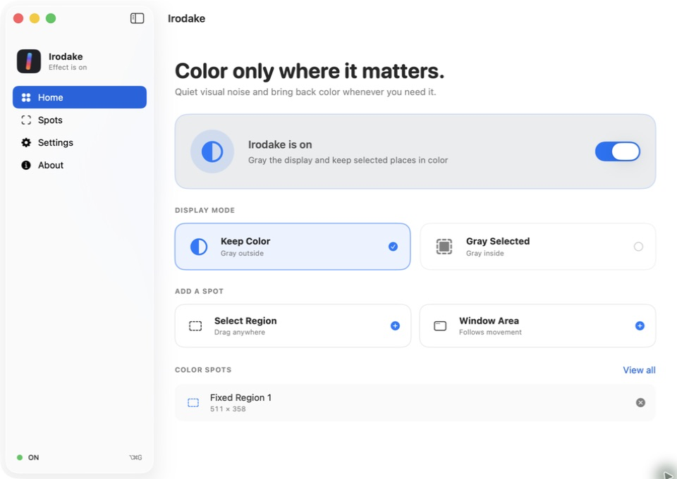
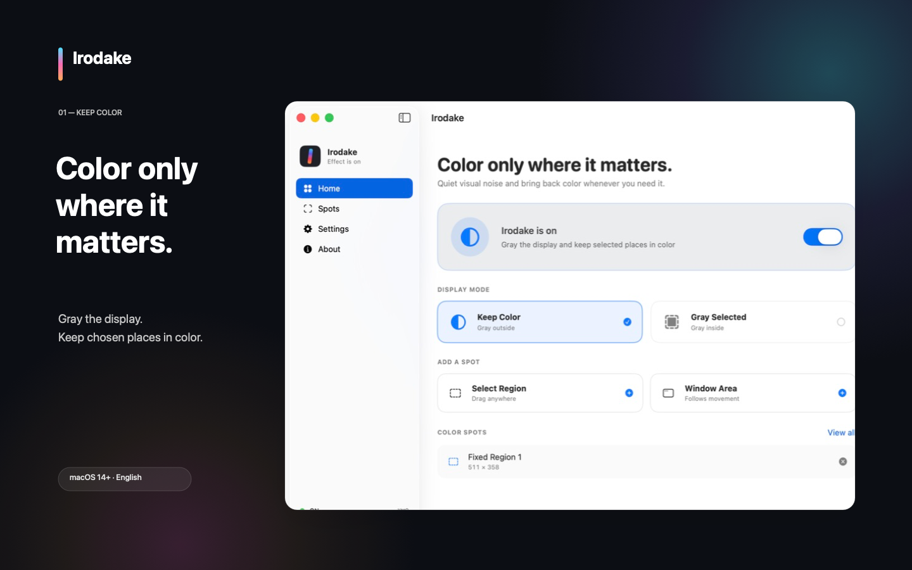
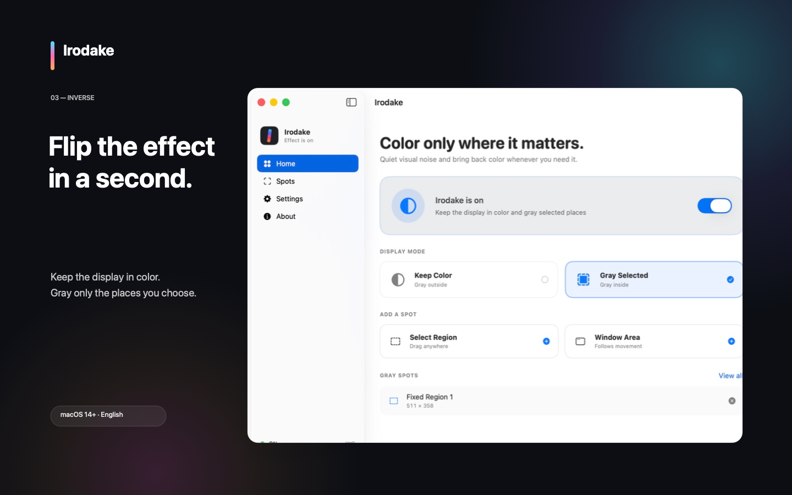
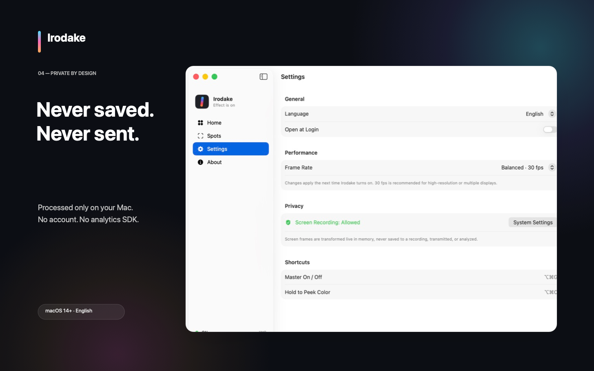

Gray the outside
Quiet the whole display while keeping a fixed region or tracked window area in its original color.
Selective color for macOS
Turn the whole display into quiet grayscale while keeping the places you need in color. Bring every color back in an instant.

Features
Use a fixed region or a window. Irodake highlights the information you need without getting in the way of your usual workspace.
Quiet the whole display while keeping a fixed region or tracked window area in its original color.
Reverse the effect whenever you want: keep the display in color and gray only selected places.
Master On/Off from the menu bar or keyboard. Hold one shortcut to peek at the full-color display.
See it in action
These real app screens show the two display modes and how spots are managed. Select an image to view it at full size.
 Keep Color
Gray Here
Keep Color
Gray Here

Choose Keep Color, then add a fixed region or a tracked window area.
Review multiple spots in one place, then add or remove them whenever needed.

Keep the display in color and gray only the places you select.
Built for your Mac
Frames are transformed live on your Mac. Irodake has no recording files, off-device screen transmission, analytics, or advertising SDKs.
Privacy Policy
Last updated: August 16, 2026

Irodake uses macOS ScreenCaptureKit to obtain display frames so it can transform color in selected areas. Frames are processed in memory and on the GPU to produce the effect. They are never saved as recordings or sent off your Mac. Audio capture is disabled.
Display mode, fixed regions, frame rate, and app language are stored locally in UserDefaults. Selected window names and identifiers are not persisted; tracked-window rules are discarded when the app quits.
Irodake requires the macOS Screen & System Audio Recording permission. macOS controls this permission, and you can revoke it in System Settings at any time. Irodake does not capture system audio.
The Irodake app does not collect, sell, or share personal data. It has no networking feature and includes no analytics, advertising, or crash-reporting SDK. If this design changes, the implementation, App Store privacy answers, and this policy will be updated in the same release.
Turn Irodake off and quit it, then run defaults delete com.hinoshiba.irodake in Terminal to remove local preferences. If a Mac App Store container remains, open ~/Library/Containers/com.hinoshiba.irodake with Finder’s Go to Folder command and remove it after uninstalling Irodake. Irodake has no server-side account or data to delete.
This website uses no cookies, analytics scripts, advertising, or external web fonts. It is delivered through GitHub Pages, so GitHub may process technical information such as IP addresses for delivery and security. See the GitHub General Privacy Statement.
Questions about this policy can be sent to support@hinoshiba.com or filed in GitHub Issues. Operator: hinoshiba.
Support
Turning Irodake off immediately removes its display effect.
support@hinoshiba.com
02Please include reproducible steps and your macOS version.
03Report vulnerabilities through the Security Policy, not a public issue.
Irodake requires macOS 14 Sonoma or later and a Metal-capable Mac. It uses Screen Recording permission. It does not request Accessibility, Input Monitoring, Apple Events, or network permissions.
Open System Settings → Privacy & Security → Screen & System Audio Recording, allow Irodake, and choose Quit & Reopen. Then turn Irodake on again.
If the built-in macOS Color Filter is set to Grayscale, Irodake cannot recover the original color. Turn the filter off in System Settings → Accessibility → Display.
DRM or capture-protected content may appear black, frozen, or missing. Irodake does not bypass content protection.
It follows the current rectangle of a selected window as it moves and resizes. If another window overlaps it, the overlapping content inside that rectangle receives the same effect. Tracking rules are discarded when the app quits.
Turn Irodake off from its menu bar item or press ⌥⌘G. Quitting Irodake also removes the effect.
You do not need to send a full-display screenshot or confidential information.
Terms
Last updated: August 16, 2026
Irodake obtained through the Mac App Store is subject to Apple’s Standard Licensed Application End User License Agreement, applicable law in your region, and App Store terms. Apple manages App Store purchase, billing, and refund processing.
Irodake source code published on GitHub is provided under the MIT License. It permits use, modification, redistribution, and sale without warranty. See THIRD_PARTY_LICENSES.txt for notices.
The MIT License does not grant permission to use the Irodake name, logo, or presentation in a way that implies an unofficial build is official. See the Trademark Policy. Modified distributions must use a name and presentation that avoid confusion with the official app.
Irodake is a display utility, not a medical device or diagnosis or treatment service. Turn it off whenever you need to verify an important color-coded display or warning. DRM and capture-protected content may not display correctly.
For support with the official edition, use the support section on this page or email support@hinoshiba.com.